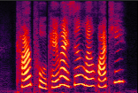

IQDUBBING: PRODOSY MODELING BASED ON DISCRETE SELF-SUPERVISED SPEECH REPRESENTATION FOR EXPRESSIVE VOICE CONVERSION
Contents
1. Abstract
Prosody modeling is important, but still challenging in expressive voice conversion. As prosody is difficult to model, and other factors, e.g., speaker, environment and content, which are entangled with prosody in speech, should be removed in prosody modeling. In this paper, we present IQDubbing to solve this problem for expressive voice conversion. To model prosody, we leverage the recent advances in discrete self-supervised speech representation (DSSR). Specifically, prosody vector is first extracted from pre-trained VQWav2Vec model, where rich prosody information is embedded while most speaker and environment information are removed effectively by quantization. To further filter out the redundant information except prosody, such as content and partial speaker information, we propose two kinds of prosody filters to sample prosody from the prosody vector. Experiments show that IQDubbing is superior to baseline and comparison systems in terms of speech quality while maintaining prosody consistency and speaker similarity.
2. System design
The architecture of IQDubbding is shown in Fig.1. In general the system follows an encoder-decoder framework, where three individual encoders are adopted, in charge of content extraction, prosody extraction and speaker representation respectively.
Specifically for the content extraction, an end-to-end ASR model is first adopted to take source audio as input and its encoder output, or the bottleneck feature (BN), is fed into the content encoder, resulting in a content vector representing the linguistic information. As for the prosody modeling, a pre-trained VQ-Wav2Vec model is adopted to process source audio and output the discrete representation -- VQW2V. The VQW2V is then fed into the prosody encoder, resulting in the prosody vector. To further filter out prosody-unrelated information from the prosody vector, we specifically design a prosody filter to get the filtered prosody vector. The decoder takes content vector, filtered prosody vector and speaker vector as input to reconstruct mel spectrum. Finally, Parallel WaveGAN is used to synthesize the converted speech.

Fig.1. Overview of the components of the proposed voice conversion model. First, prosody modeling is based on DSSR. DSSR is discrete self-supervised speech representation. Besides, two kinds of prosody filters: random downsample prosody filter(RDPF) and aligned downsample prosody filter(ADPF), are compared.

Fig.2. VQW2V based prosody encoder. The VQW2V indices are from pre-trained VQ-Wav2Vec model.

(a) Random downsample prosody filter (RDPF). Prosody Vector is grouped by a fixed rate.

(b) Align downsample prosody filter (PLPF). Prosody Vector is aligned by a phone alignment sequence.
Fig.3. Prosody filter. Here Mandarin syllable “hua2” is chosen as an example, which includes 3 phones, “HH”, “UW2” and “AA2”.The 1st and 2nd frame belong to “HH”. The 3rd frame belongs to “AA2”. The 4th, 5th and 6th frame belong to ”AA2”. Please focus on the filtered prosody vector of each phone.
3. Evaluation sample
3.1 Target speaker sample
Table.1. Target speaker sample.
| Speaker | Samples | ||||
|---|---|---|---|---|---|
| ESD08 | |||||
3.2 Training On ESD dataset
Table.2. The results of voice conversion in test set
| Test Set | Scenarios | Input | BL | CS | IQDubbing | IQDubbing-RDPF | IQDubbing-ADPF |
|---|---|---|---|---|---|---|---|
| 1 | Ordinary-Female-Sad | ||||||
| 2 | Ordinary-Female-Hate | ||||||
| 3 | Ordinary-Female-Surprise | ||||||
| 4 | Ordinary-Male-Happy | ||||||
| 5 | Ordinary-Male-Fear | ||||||
| 6 | Ordinary-Male-Angry | ||||||
| 7 | Ordinary-Male-Neutal | ||||||
| 8 | Dubbing-Female-Neutal | ||||||
| 9 | Dubbing-Male-Happy | ||||||
| 10 | Dubbing-Female-Neutal | ||||||
| 11 | Dubbing-Female-Sad | ||||||
| 12 | Dubbing-Female-Neutal | ||||||
| 13 | Dubbing-Female-Surprise | ||||||
| 14 | Dubbing-Female-Angry | ||||||
| 15 | Dubbing-Male-Neutal |
Short summary: The score of IQDubbing is higher than BL and CS. However, the score of IQDubbing-RDPF is lower than IQDubbing as RDPF is not stable at runtime. IQDubbing-ADPF achieves the highest MOS score, which indicates that ADPF helps to improve speech quality by successfully removing content and speaker information in prosody
3. Necessity and Contribution Analysis of Prosody Filter
We conduct following tests to verify the necessity and contribution of prosody sieve module. The details are shown as follows:
Only Content: The value of VQW2V is set to 0 in the corresponding system.
Only Prosody: The value of BN is set to 0 in the corresponding system.
Content+Prosody: BN and VQW2V are used normally in the corresponding system.
The spectrograms shown in Table.3 are from the utterances generated by IQDubbing, IQDubbing-RDPF or IQDubbing-ADPF respectively. They are used to show the content or prosody information of speech. As is shown in Table.3, the spectrogram of Only Content is worse than Only Prosody with IQDubbing. It shows that content information is leaked from VQW2V in IQDubbing. However, the content information should be obtained from BN. It verifies the necessity of prosody filter. It is also found that Only Content is very close to Content+Prosody in IQDubbing-RDPF, which illustrates the contribution of VQW2V is limited. Furthermore, we find that both BN and VQW2V play an important role in IQDubbing-ADPF. Obviously, the effect of prosody filter module is verified in IQDubbing-ADPF, which is consistent with the evalution results in paper section 3.2 and 3.3.
Table.3. Necessity and contribution analysis of prosody sieve. The spectrograms areused to show the content or prosody information.
| Conditon | IQDubbing | IQDubbing-RDPF | IQDubbing-ADPF |
|---|---|---|---|
| Only Content | |||
| Only Prosody | |||
| Content + Prosody | |||
|  |